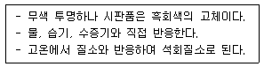
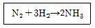
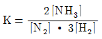
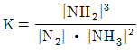
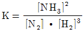
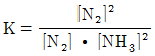
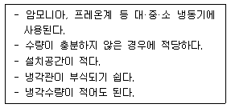
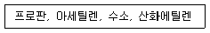
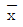
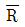

가스기능장 (2009-07-12 기출문제)
1과목: 임의 구분
1. 일반도시가스 사업자는 공급권역을 구역별로 분할하고 원격조작에 의한 긴급차단장치를 설치하여 대형가스누출, 지진발생 등 비상시 가스차단을 할 수 있도록 하는 구역의 설정기준으로 옳은 것은?
- 수요자가 20만 이하가 되도록 설정
- 수요자가 25만 이하가 되도록 설정
- 배관의 길이가 20[km] 이하가 되도록 설정
- 배관의 길이가 25[km] 이하가 되도록 설정
(정답률: 76%)

2. 다음 [보기]의 특징을 가지는 물질은?

- CAC2
- P4S2
- P4
- KH
(정답률: 95%)
3. 산화에틸렌의 저장탱크 및 충전 용기에는 45[℃]에서 그 내부 가스의 압력이 얼마 이상이 되도록 질소가스 등을 충전하여야 하는가?
- 0.2[MPa]
- 0.4[MPa]
- 1[MPa]
- 2[MPa]
(정답률: 82%)
4. 특정고압가스 사용신고를 하여야 하는 자는 저장능력이 몇 [kg] 이상인 액화가스 저장설비를 갖추고 특정고압가스를 사용하여야 하는가?
- 100
- 250
- 500
- 1000
(정답률: 66%)
5. 고압가스 배관의 용접에서 용접이음매의 위치 기준에 대한 설명으로 틀린 것은?
- 배관의 용접은 지그(jig)를 사용하여 가장자리부터 정확 하게 위치를 맞춘다.
- 관의 두께가 다른 배관의 맞대기 이음에서는 관 두께가 완만하게 변화되도록 길이방향의 기울기를 1/3 이하로 한다.
- 배관을 맞대기 용접하는 경우 평행한 용접 이음매의 간격은 원칙적으로 관지름이상으로 한다.
- 배관상호의 길이 이음매는 원주방향에서 원칙적으로 50[mm] 이상 떨어지게 한다.
(정답률: 83%)
6. 다음 중 특정고압가스가 아닌 것은?
- 압축디보레인
- 액화알진
- 에틸렌
- 아세틸렌
(정답률: 74%)
7. 정압과정에서의 전달 열량은?
- 내부에너지의 변화량과 같다
- 이루어진 일량과 같다.
- 엔탈피 변화량과 같다.
- 체적의 변화량과 같다.
(정답률: 67%)
8. 도시가스 시설에 대한 줄파기 작업의 기준에 대한 설명으로 틀린 것은?
- 가스배관이 있을 것으로 예상되는 지점으로부터 2[m] 이내에서 줄파기를 할 때에는 안전관리전담자의 입회하에 시행한다.
- 줄파기 1일 시공량 결정은 시공속도가 가장 빠른 천공작업에 맞추어 결정한다.
- 줄파기 심도는 최소한 1.5[m] 이상으로하며 지장물의 유무가 확인되지 않는 곳은 안전관리전담자와 협의 후 공사의 진척여부를 결정한다.
- 줄파기공사 후 가스배관으로부터 1[m] 이내에 파일을 설치할 경우에는 유도관을 먼저 설치한 후 되메우기를 실시한다.
(정답률: 85%)
9. 액화석유가스의 안전관리 및 사업법에서 안전관리규정을 제출한 자와 그 종사자는 안전관리규정을 준수하고 그 실시기록을 작성하여 몇 년간 보존하도록 규정하고 있는가?
- 2
- 3
- 4
- 5
(정답률: 60%)
10. 도시가스 안전관리자의 직무로서 가장 거리가 먼 것은?
- 가스공그시설의 안전유지
- 위해예방조치의 이행
- 안전관리원의 교육
- 정기검사 결과 부적합 판정을 받은 시설의 개선
(정답률: 79%)
11. -40[C]는 몇 [F]인가?
- -40
- -32
- 40
- 44
(정답률: 92%)
12. 다음 중 암모니아의 완전연소 반응식을게 나타낸 것은?
- 2NH3 + 2O2 → N2O + 3H2O
- 4NH3 + 3O2 → 2N2 + 6H2O
- NH3 + 2O2 → HNO3 + H2O
- 4NH3 + 5O2 → 4NO + 6H2O
(정답률: 65%)
13. 다음의 각 가스와 그 가스의 제조법을 연결한 것 중 틀린 것은?
- 수소 - 수성가스법, CO전화법
- 염소 - 합성법, 석회질소법
- 시안화수소 - 앤드류 소오법, 폼아미드법
- 산소 - 전기분해법, 공기액화 분리법
(정답률: 71%)
14. 암모니아 합성가스 분리장치에 대한 설명으로 옳은 것은?
- 메탄은 제1열교환기에서 액화하여 분리된다
- 질소는 상압으로 공급된다.
- 에틸렌은 제3열교환기에서 액화한다.
- 일산화질소는 정촉매로 작용한다
(정답률: 69%)
15. 도시가스 배관 중 전기방식을 반드시 유지해야 할 장소가 아닌 것은?
- 다른 금속구조물과 근접교차 부분
- 배관 절연부의 양측
- 교량, 하천, 배관의 양단부 및 아파트 입상배관 노출부
- 강재 보호관 부분의 배관과 강재 보호관
(정답률: 78%)
16. 양단이 고정된 20[cm] 길이의 환봉을 20[℃]에서 80[℃]로 가열하였을 때 재료내부에서 발생하는 열응력은 약 몇 [MPa]인가? (단, 재료의 선팽창계수는 11.⑤×10-6/[C]이며, 탄성계수 E 는 210GPa]이다.)
- 69,62
- 139.23
- 696.15
- 2784.60
(정답률: 58%)
17. 냉동능력 25[RT]인 냉매설비와 화기설비의 이격거리의 기준으로 틀린 것은? (단, 냉매는 불연성가스이다.)
- 내화 방열벽을 설치하지 않은 경우 제1종화기 설비와 5[m] 이상 이격거리를 두어야 한다.
- 내화 방열벽을 설치하지 않는 경우 제2종화기 설비와4(m] 이상 이격거리를 두어야 한다.
- 내화 방열벽을 설치한 경우 제2종 화기설비와 1[m] 이상 이격거리를 두어야 한다.
- 내화 방열벽을 설치한 경우 제1종 화기설비와 2[m] 이상 이격거리를 두어야 한다.
(정답률: 59%)
18. 팩리스(packless) 신축이음재라고도 하며 설치공간을 적게 차지하나 고압배관에는 부적당한 신축이음재는?
- 슬리브형 신축이음재
- 벨로스형 신축이음재
- 루프형 신축이음재
- 스위블형 신축이음재
(정답률: 67%)
19. 어떤 기체가 10[℃], 760[mmHg]에서 100[mL]의 무게가 0.2[g]이라면 표준상태에서 이 기체의 밀도는 약 몇 [g/L]인가?
- 1.8
- 2.1
- 2.4
- 2.7
(정답률: 47%)
20. 흡수식 냉동기에서 냉매와 흡수제로 사용되는 것을 옳게 나타낸 것은?
- 물 - 취화리튬
- 물 - 염화메틸
- 물 - 프레온22
- 물 - 메틸클로라이드
(정답률: 75%)
2과목: 임의 구분
21. 도시가스 특정가스 사용시설의 배관 고정 (지지)간격의 설치 기준에 대한 설명으로 옳은 것은?
- 호칭 지름 12[mm] 미만인 배관은 1[m] 마다 고정장치를 설치하여야 한다.
- 호칭 지름 12[mm] 이상 33[mm] 미만인 배관은 2[mm] 마다 고정장치를 설치하여 한다.
- 호칭 지름 33[mm] 이상인 배관은 3[m] 마다 고정장치를 설치하여야 한다.
- 배관과 고정장치 사이에는 절연조치를 하지 않아도 된다.
(정답률: 84%)
22. 가스 도매사업의 가스공급시설인 배관을 지하에 매설하는 경우의 기준에 대한 설명으로 옳은 것은?
- 지표면으로부터 배관 외면까지의 매설깊이는 산이나 들의 경우에는 1.2[m] 이상으로 한다.
- PE배관의 굴곡 허용반지름은 바깥지름의 50배 이상으로 한다.
- 배관은 그 외면으로부터 수평거리로 건축물까지 1.2[m] 이상을 유지한다.
- 도로가 평탄할 경우의 배관의 기울기는 1/500~1/1000 정도의 기울기로 설치한다.
(정답률: 91%)
23. 단열압축에 대한 설명으로 틀린 것은?
- 공급되는 열량은 0이다.
- 공급되는 일은 기체의 엔탈피 증가로 보존된다.
- 단열 압축 전 보다 압력이 증가한다.
- 단열 압축 전 보다 온도 비체적이 증가한다.
(정답률: 49%)
24. 부취제 주입방법에 대한 설명으로 틀린 것은?
- 펌프 주입방식은 부취제 첨가율의 조절이 용이하며 주로 대규모 공급용으로 적합하다.
- 바이패스 증발식은 온도, 압력 등의 변동에 따라 부취제의 첨가율이 변동하며 주로 중, 소규모용으로 적합하다.
- 적하 주입방식은 부위제 첨가율을 일정하게 하기 위해 수동조절이 필요 없고 주로 대규모용으로 적합하다.
- 위크 증발식은 부취제 첨가량의 조절이 어렵고, 주로 소규모용으로 적합하다.
(정답률: 70%)
25. 프로판가스 2.2(kg]을 완전연소 시키는데 필요한 이론공기량은 25[C],750 [mmHg]에서 약 몇 [m3]인가?
- 29.50
- 34.66
- 4451
- 57.25
(정답률: 40%)
26. 다음 반응식의 평형상수(K)를 올바르게 나타낸 것은?





(정답률: 80%)
27. 금속재료의 가스에 의한 침식에 대한 설명으로 틀린 것은?
- 고온, 고압의 암모니아는 강재에 대해서 질화작용과 수소취성의 2가지 작용을 미친다.
- 일산화탄소는 Fe, Ni 등 철족의 금속과 작용하여 금속 카르보닐을 생성한다.
- 고온, 고압의 질소는 강재의 내부까지 침입하여 강재를 취화시키므로 고온, 고압의 질소를 취급하는 기기에는 강재를 사용할 수 없다.
- 중유나 연료유 속에 포함되는 바나듐산화물이 금속표면에 부착하면 급격한 고온부식을 일으킨다.
(정답률: 68%)
28. 결정입자가 선택적으로 부식하는 것으로 열영향에 의해 Cr을 석출하는 부식현상은?
- 국부부식
- 선택부식
- 입계부식
- 응력부식
(정답률: 62%)
29. 다음 [보기]에서 설명하는 응축기 종류는?

- 입형 쉘 앤드 튜브식 응축기
- 횡형 쉘 앤드 튜브식 응축기
- 7통로식 응축기
- 대기식 브리다형 응축기
(정답률: 83%)
30. 다음 중 고압가스 안전관리법의 적용범위에서 제외되는 고압가스가 아닌 것은?
- 오토클레 이브 안의 수소가스
- 철도차량의 에어콘디셔너 안의 고압가스
- 등화용의 아세틸렌가스
- 냉동능력이 3톤 미만인 냉동설비 안의 고압가스
(정답률: 91%)
31. 도시가스 본관 중 중압 배관의 내용적이 9[m3]일 경우 자기압력기록계를 이용한 기밀시험 유지시간은?
- 24분 이상
- 40분 이상
- 216분 이상
- 240분 이상
(정답률: 79%)
32. 천연가스를 원료로 하는 도시가스의 연소폐가스 성분으로 가장 거리가 먼 것은?
- 공기 중의 질소와 과잉산소
- 이산화탄소와 수증기
- 가스 중의 불연성 성분
- 메탄과 수소
(정답률: 78%)
33. 수소의 일반적인 성질에 대한 설명으로 옳은 것은?
- 열전도도가 대단히 크다.
- 확산속도가 아주 작아 공기 중에 확산되기 어렵다.
- 폭발한계 이내인 경우 단독으로 분해 폭발한다.
- 폭굉속도는 400-500m/s]로서 아주 빠르다.
(정답률: 74%)
34. 안전밸브(safety valve)에 대한 설명으로 옳은 것은?
- 안전장치에서 가장 많이 사용되는 것은 중추식 이다.
- 안전밸브 전에 는 스톱밸브를 설치하지 않아도 된다.
- 안전밸브의 수리 시 스톱밸브는 닫아준다.
- 안전밸브와 스톱밸브는 항상 닫아둔다.
(정답률: 79%)
35. 굴착공사에 의한 도시가스배관 손상방지 기준 중 굴착공사자가 공사 중에 시행하여야 할 기준에 대한 설명으로 틀린 것은?
- 가스안전 영향평가 대상 굴착공사 중 가스배관의 수직, 수평 변위 및 지반침하의 우려가 있는 경우에는 가스배관 변형 및 지반침하 여부를 확인한다.
- 가스배관 주위에서는 중장비의 배치 및 작업을 제한하여야 한다.
- 계절 온도변화에 따라 와이어로프 등의 느슨해짐을 수정하고 가설구조물의 변형유무를 확인하여야 한다.
- 굴착공사에 의해 노출된 가스배관과 가스안전 영향평가 대상범위 내의 가스배관은 월간 안전점검을 실시하고 점검표에 기록한다.
(정답률: 87%)
36. 고압가스를 취급하였을 때 다음 중 위험하지 않은 경우는?
- 산소 5[%]를 함유한 CH4를 100[kgf/cm2]까지 압축하였다
- 산소 제조장치를 공기로 치환하지 않고 용접 수리하였다.
- 수분을 함유한 염소를 진한 황산으로 세척하여 고압용기에 충전하였다.
- 시안화수소를 고압용기에 충전하는 경우 수분을 안정제로 첨가하였다.
(정답률: 81%)
37. 폭굉유도거리(DID)가 짧아질 수 있는 조건으로 옳은 것은?
- 관 속에 방해물이 있거나 관지름이 가늘수록
- 압력이 낮을수록
- 점화원의 에너지가 작을수록
- 정상연소속도가 느린 혼합가스일수록
(정답률: 78%)
38. LPG 충전소 용기의 잔가스 제거장치의 설치 기준으로 틀린 것은?
- 용기에 잔류하는 액화석유가스를 회수할 수 있는 용기전도대를 갖춘다.
- 회수한 잔가스를 저장하는 전용탱크의 내용적은 1000[L] 이상으로 한다.
- 잔가스 연소장치는 잔가스 회수 또는 배출하는 설비로부터 8[m] 이상의 거리를 유지하는 장소에 설치한 것으로 한다.
- 압축기에는 유분리기 및 응축기가 부착되어 있고 1 [MPa] 이상 0,⑤[MPa] 이하의 압력에서 자동으로 정지하도록 한다.
(정답률: 65%)
39. 공기액화 분리장치 액화 산소통 내의 액화산소 30[L] 중에 메탄이 1000[mg], 아세틸렌 50[mg]이 섞여 있을 때의 조치로서 옳은 것은?
- 안전하므로 계속 운전한다.
- 운전을 계속하면서 액화산소를 방출한다.
- 극히 위험한 상태이므로 즉시 희석제를 첨가한다.
- 즉시 운전을 중지하고, 액화산소를 방출한다.
(정답률: 88%)
40. 다음 [보기]의 가연성가스 중 위험성 크기의 순서가 옳게 나열된 것은?

- 프로판 < 수소 < 산화에틸렌 < 아세틸렌
- 수소 < 프로판 < 산화에틸렌 ＜ 아세틸렌
- 산화에틸렌 < 프로판 < 수소 ＜ 아세틸렌
- 프로판 < 산화에틸렌 < 수소 < 아세틸렌
(정답률: 75%)
3과목: 임의 구분
41. 액화염소가스 1250[kg]을 용량이 25[L]인 용기에 충전하려면 몇 개의 용기가 필요한가? (단, 가스정수는 08이다.)
- 20
- 40
- 60
- 80
(정답률: 82%)
42. 가스안전관리에서 사용되는 다음 위험성 평가기법 중 정량적 기법에 해당되는 것은?
- 위험과 운전분석(HAZOP)
- 사고예상질문 분석(WHAT-IF)
- 체크리스트법(check list)
- 작업자실수 분석(HEA)
(정답률: 76%)
43. 혼합가스 중의 아세틸렌가스를 헴펠법으로 정량분석 하고자 한다. 이 때 사용되는 흡수제는?
- 파라듐블랙
- 황산 제1철 용액
- Kl 수용액
- 발연황산
(정답률: 81%)
44. 도시가스 배관의 굴착으로 인하여 몇 m 이상 노출된 배관에 대하여 누출된 가스가 체류하기 쉬운 장소에 가스누출경보기를 설치하여야 하는?
- 10
- 20
- 30
- 50
(정답률: 79%)
45. 액화석유가스의 안전관리 및 사업법상액화석유가스라 함은 무엇을 주성분으로 한가스를 말하는가?
- 프로판 부탄
- 프로판, 메탄
- 부탄, 메탄
- 천연가스
(정답률: 79%)
46. 액화석유가스 용기충전시설의 저장탱크에 폭발방지장치를 의무적으로 설치하여야 하는 경우는? (단, 저장탱크는 저온저장탱크가 아니며, 물분무장치 설치 기준을 충족하지 못하는 것으로 가정한다.)
- 상업지역에 저장능력 15톤 저장탱크를 지상에 설치하는 경우
- 녹지 지역에 저장능력 20톤 저장탱크를 지상에 설치하는 경우
- 주거지역에 저장능력 5톤 저장탱크를 지상에 설치하는 경우
- 녹지 지역에 저장능력 30톤 저장탱크를 지상에 설치하는 경우
(정답률: 85%)
47. 공기보다 비중이 가벼운 도시가스의 정압기실로서 지하에 설치되는 경우의 통풍구조에 대한 설명으로 틀린 것은?
- 통풍구조는 환기구를 2방향 이상으로 분산 설치한다.
- 배기구는 천장면으로부터 30[cm] 이내에 설치한다
- 흡입구 및 배기구의 관지름은 80[mm] 이상으로 한다
- 배기가스의 방출구는 지면에서 31m] 이상의 높이에 설치한다.
(정답률: 62%)
48. 20[℃], 760[mmHg]에서 상대습도가 70[%]인 공기의 mol 습도는 약 몇 [kg-mol H2O/kg-mol 건조공기]인가? (단, 물의 증기압은 17.5[mmHg]이다.)
- 0.0164
- 0.0257
- 12.25
- 747.75
(정답률: 43%)
49. 재검사용기 및 특정설비의 파기방법에 대한 설명으로 틀린 것은?
- 잔가스를 전부 제거한 후 절단할 것
- 검사신청인에게 파기의 사유, 일시, 장소 및 인수시한 등을 통지하고 파기할 것
- 절단 등의 방법으로 파기하여 원형으로 재가공이 가능하게 하여 재활용할 수 있도록 할 것
- 파기하는 때에는 검사장소에서 검사원으로 하여금 직접 실시하게 하거나 검사원 입회하에 특정설비의 사용자로 하여금 실시하게 할 것
(정답률: 93%)
50. C2H2을 2.5[MPa]의 압력으로 압축하려고 한다. 이 때 사용하는 희석제로 옳은 것은?
- Na2CO3
- H2SO4
- C2H4
- CaCl2
(정답률: 64%)
51. CO와 Cl2를 원료로 하여 포스겐을 제조할 때 주로 사용되는 촉매는?
- 염화 제1구리
- 백금, 로듐
- 니켈, 바나듐
- 활성탄
(정답률: 82%)
52. 펠티어(peltier)의 효과를 이용하는 열전 냉동법은?
- 전자 냉동기
- 증기분사식 냉동기
- 흡수식 냉동기
- 증기압축식 냉동기
(정답률: 67%)
53. 염화암모늄과 아질산나트륨의 혼합물을 가열하였을 때 주로 얻을 수 있는 기체는?
- 염소
- 암모니아
- 산화질소
- 질소
(정답률: 68%)
54. 부유피스톤형 압력계에서 실린더 지름이 20[mm], 추와 피스톤의 무게가 20[kg]일 때, 이 압력계에 접속된 부르동관의 압력계 눈금이 7[kgf/cm2]를 나타내었다. 부르동관 압력계의 오차는 약 몇 [%]인가?
- 4
- 5
- 8
- 10
(정답률: 58%)
55. 200개 들이 상자가 15개 있다. 각 상자로부터 제품을 랜덤하게 10개씩 샘플링 할 경우 이러한 샘플링 방법을 무엇이라 하는가?
- 계통 샘플링
- 취락 샘플링
- 층별 샘플링
- 2단계 샘플링
(정답률: 76%)
56.

관리도에서 관리상한이 22.15, 관리하한이 6.85,
= 7.5일 때 시료군의 크기(n)는 얼마인가? (단, n = 2일 때 A2=1.88, n=3일 때 A2 = 1.02, n= 4일 때 A2=0.73, n=5일 때 A2= 0.58 이다.)- 2
- 3
- 4
- 5
(정답률: 58%)
57. ASME(American Society of Machine Engineers)에서 정의하고 있는 제품공정 분석표에 사용되는 기호 중 "저장(storage)"을 표현한 것은?
- ○
- D
- □
- ∇
(정답률: 88%)
58. 사내표준을 작성할 때 갖추어야 할 요건으로 옳지 않은 것은?
- 내용이 구체적이고 주관적일 것
- 장기적 방침 및 체계 하에서 추진할 것
- 작업표준에는 수단 및 행동을 직접 제시할겻
- 당사자에게 의견을 말하는 기회를 부여하는 절차로 정할 것
(정답률: 83%)
59. 어떤 측정법으로 동일 시료를 무한횟수 측정하였을 때 데이터 분포의 평균치와 모집단 참값과의 차를 무엇이라 하는?
- 편차
- 신뢰성
- 정확성
- 정밀도
(정답률: 85%)
60. 다음 중 신제품에 대한 수요예측 방법으로 가장 적합한 것은?
- 시장조사법
- 이동평균법
- 지수평활법
- 최소자승법
(정답률: 92%)